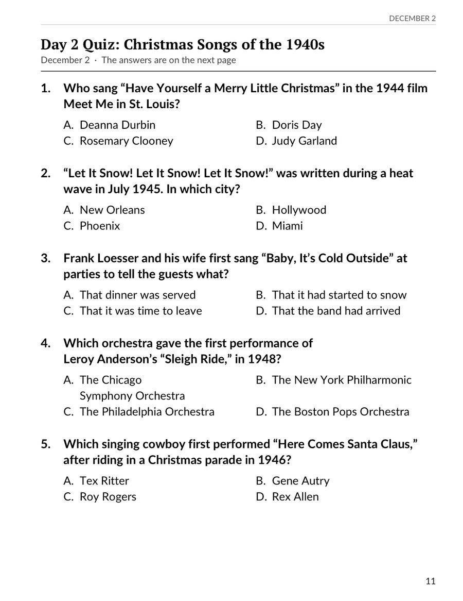
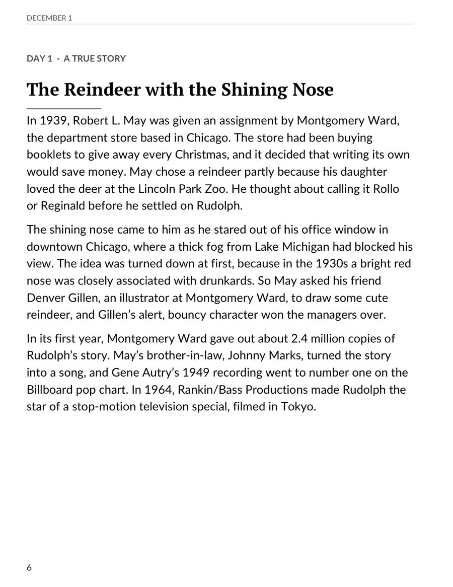
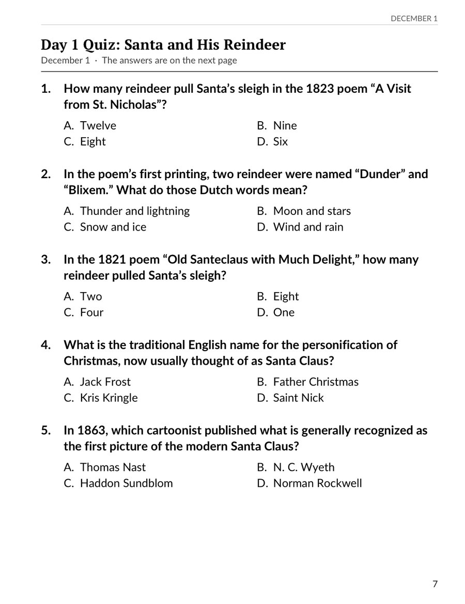
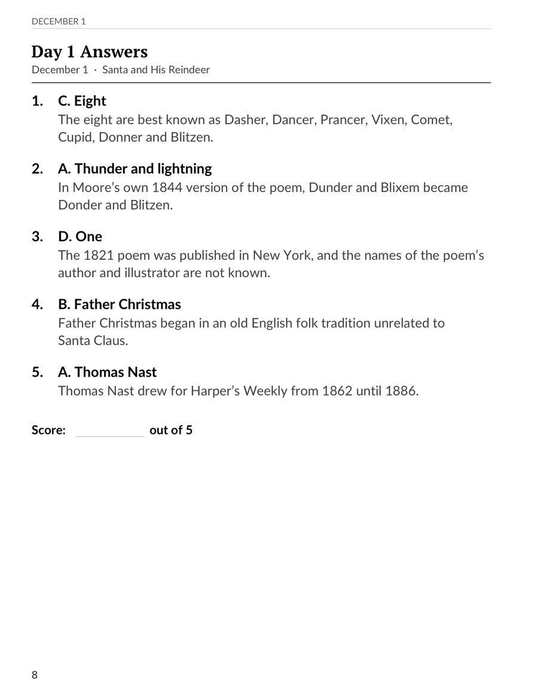
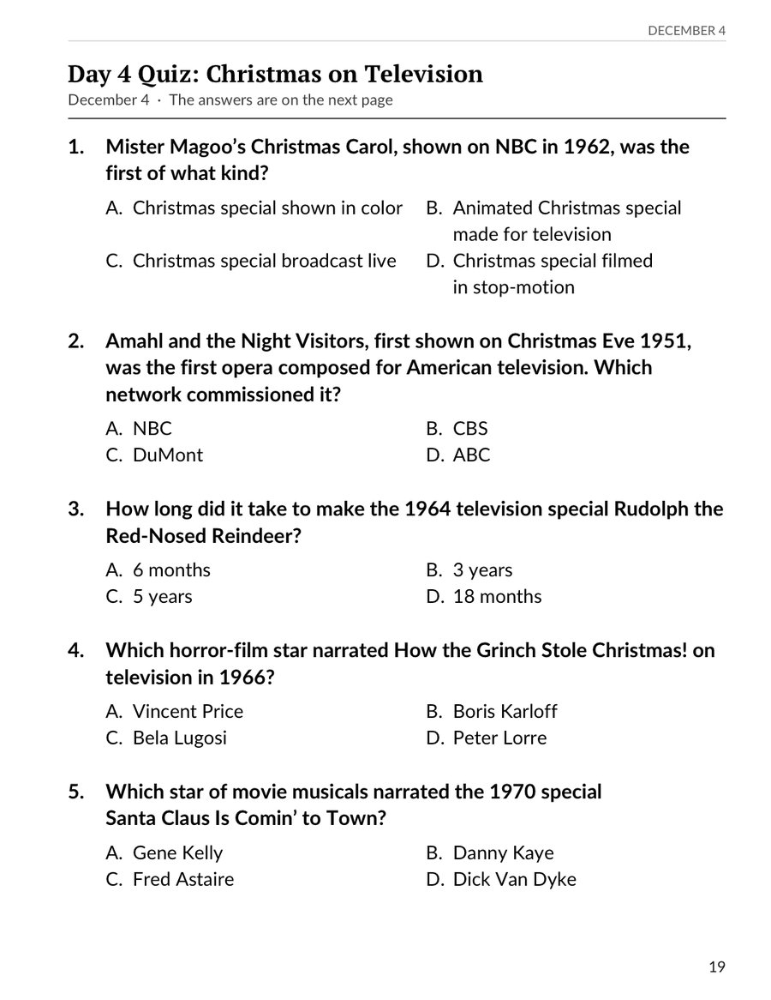
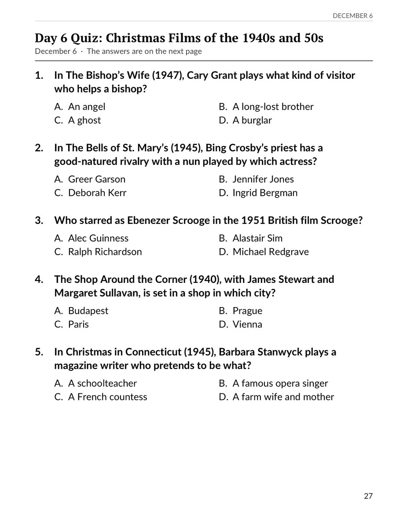
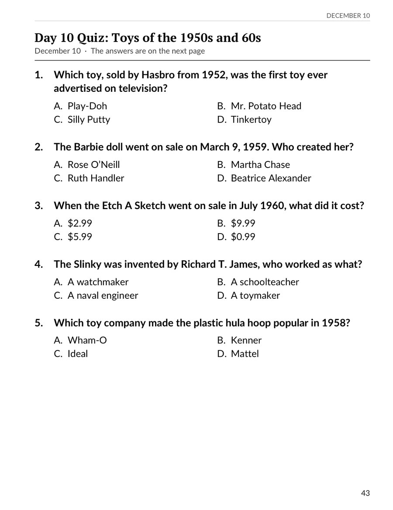
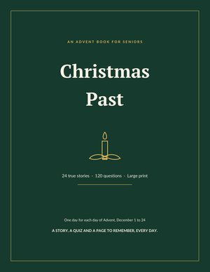
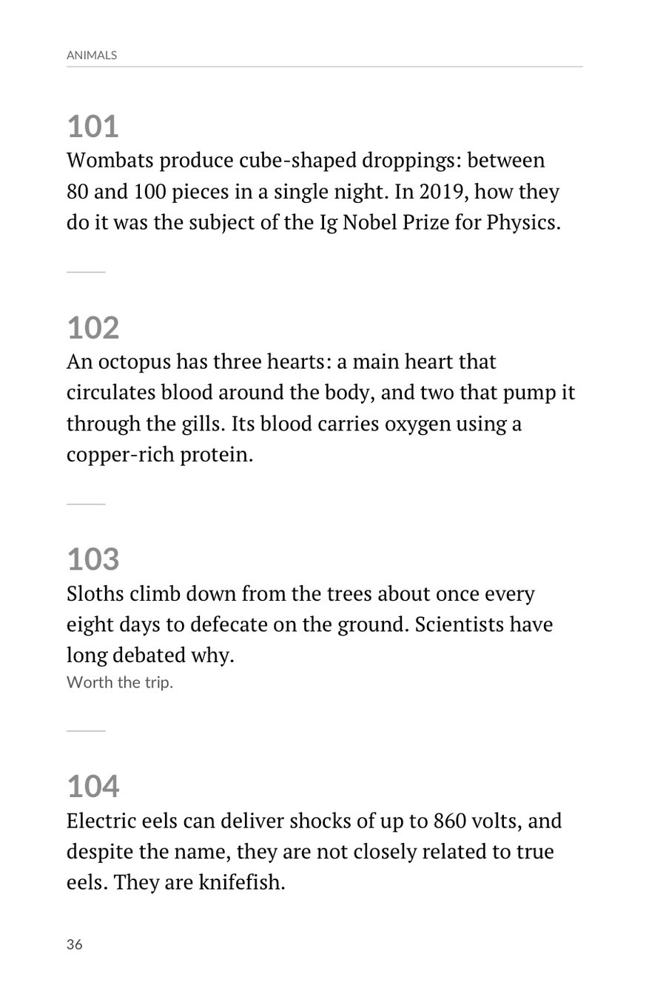

Large-Print Christmas Songs of the 1940s Trivia Quiz
From the Christmas Past: An Advent Book for Seniors
Day 1 from Christmas Past: An Advent Book for Seniors: the true story of the reindeer with the shining nose, its five-question quiz, and the answers, each with a fun fact. Large print. Print copies for a group, a party or a visit.




From the Christmas Past: An Advent Book for Seniors

From the Christmas Past: An Advent Book for Seniors

From the Christmas Past: An Advent Book for Seniors

From the Christmas Past: An Advent Book for Seniors

Twenty-four true stories from Christmases gone by, one for each day from December 1 to 24: how a department store invented Rudolph, and what three astronauts read from the Moon on Christmas Eve, 1968. Each day adds a five-question quiz and a page to remember and share.
Outside the US: Amazon UK · Amazon Canada · Amazon Australia

From the Nostalgia Word Search for Seniors: Christmas Edition

From the Bowel of Knowledge